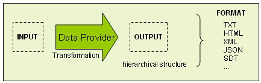
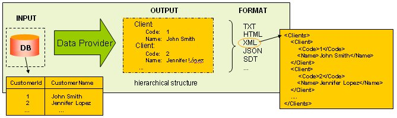

Data Provider object
Loads data in a hierarchical structure (from databases, services, fixed values, etc.).
Description
Applications increasingly need to interact by exchanging data. From an application in a travel agency, ticket requests have to be sent to an airline containing the passengers' information; from another application, a Google service has to be used or merely exchange structured data within the application itself.
In this scenario, handling structured data becomes essential. The format used to represent them is not and will not be homogeneous. While XML is the most widely used format today, other formats are emerging, such as JSON to lighten the transfer, and we don't know what the future holds.
A Data Provider is a 'declarative procedure' used to obtain data in a hierarchical structure, with maximum clarity and minimum effort. How? By making the intention clear, that is to say, the output. Then, by simply indicating the desired format of the output.

Anything that can be done with a Data Provider can also be done with a Procedure. Both can be seen as processes where there is an Input, a Transformation, and an Output. The difference between them is that in a regular Procedure the focus is on the Transformation language. Meanwhile, in a Data Provider, the focus is on the Output language.
For example, if the process consists of reading all customers (Input) and writing an XML file with them (Output), the Procedure is as follows:
&XmlWriter.Open(...)
&XmlWriter.WriteStartElement('Clients')
For Each
&XmlWriter.WriteStartElement('Client')
&XmlWriter.WriteElement('Code', CustomerId.ToString())
&XmlWriter.WriteElement('Name', CustomerName)
&XmlWrite.EndElement()
Endfor
&XmlWriter.EndElement()
&XmlWriter.Close()
&XmlWriter is a variable of the GeneXus XMLWriter data type.
Here is not so easy to quickly 'see' the procedure output. Indeed, it is confusingly embedded inside the code written to obtain it.
Instead, the Data Provider shows clearly the intention:
Clients
{
Client
{
Code = CustomerId
Name = CustomerName
}
}
Then, through the ToXML method, the output could be easily converted into the equivalent XML format:
<Clients> <Client> <Code>1</Code> <Name>John Smith</Name> </Client> <Client> <Code>2</Code> <Name>Jennifer Lopez</Name> </Client> ... </Clients>

The way GeneXus implements hierarchical structures is the Structured Data Type (SDT) object. You can see this example fully implemented.
As you can see, a Data Provider is easier to write and understand, so some tasks will be easier to do with Data Providers than with regular Procedures. Which are they? Those that return structured data. For example:
- Writing XML files, like Web Services and RSS feeds.
- Filling SDTs, like the one used to bind with User Controls, GXchart or TabbedView Web Component.
- Filling the structure of BCs, that can be returned in a collection variable and then, going through it, saving in the Database.
Examples
Before going into a more formal definition, it can be helpful to present some samples:
Sample 1: Listing today's Invoices ordered by the amount
Invoices
{
Date = today()
Invoice Order InvoiceAmount
Where InvoiceDate = today()
{
Id = InvoiceId
CustomerId = CustomerId
CustomerName = CustomerName
Amount = InvoiceAmount
Product
{
Id = ProductId
DetailQuantity = InvoiceDetailQuantity
DetailAmount = InvoiceDetailAmount
}
}
}
The output will be an SDT with today's date and a collection of items representing those invoices with InvoiceDate = today().
Sample 2: System Constants
ChartConstants
{
ChartServer = 'http://www.gxchart.com/drawchart.asp'
ChartParameters = '...'
}
Another example in the same area is loading the Tabs SDT needed by the TabbedView Web Component:
LoadTabs parm(&CustomerId)
Tabs
{
Tab
{
Code = 'General'
WebComponent = link(WCustomerGeneral, &CustomerId)
}
Tab
{
Code = 'Invoices'
WebComponent = link(WCustomerInvoices, &CustomerId)
}
}
(see here for more details).
Sample 3: RSS feed with today's Invoices
rss
{
version = "2.0"
channel
{
title = "Today's Invoices"
link = link(ViewTodayInvoices)
item where InvoiceDate = today()
{
title = format('Invoice %1', InvoiceId)
link = link(ViewInvoice, InvoiceId)
description = format('Invoice %1 for customer %2, amount %3', InvoiceId, CustomerName, InvoiceAmount)
author = 'system'
pubDate = today()
}
}
}
Now that you understand the spirit of Data Providers, take a look at:
- Data Provider language
- Data Provider: Input
- Data Provider: Output
- Using Data Providers in Other GX Objects
- Expose a Data Provider as Web Service
- Recursive Data Providers
And at the following examples and use cases:
- Example: step by step 'CustomersProvider' Data Provider
- Data Provider Use Case: TabbedView usage
- Data Provider Use Case: sales invoice into accounting
- Example: Data Provider Break
Data Providers go a step further in 'declaring' instead of 'programming'. The big advantage: the underlying implementation can be changed, and the Data Provider will remain valid. More on Data Providers philosophy.